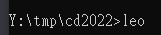
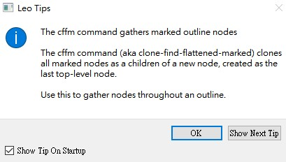
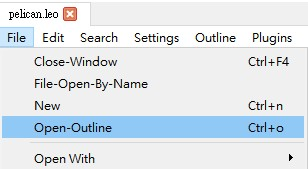
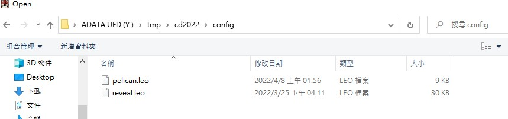
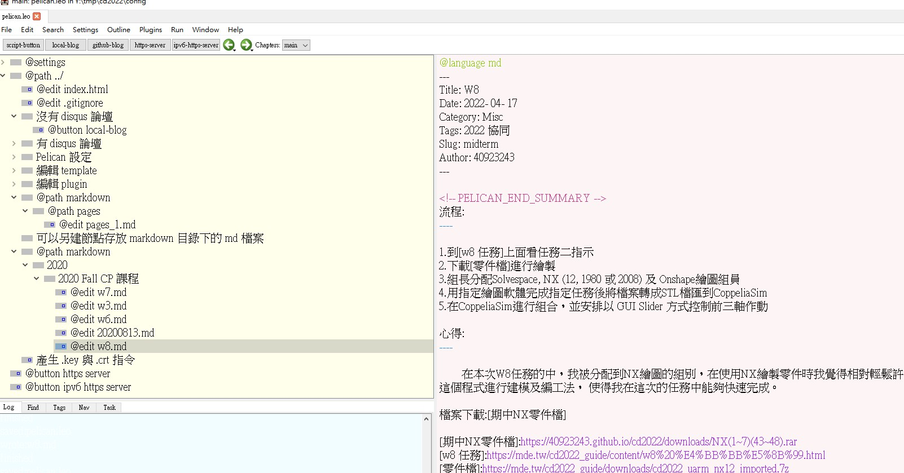
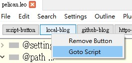
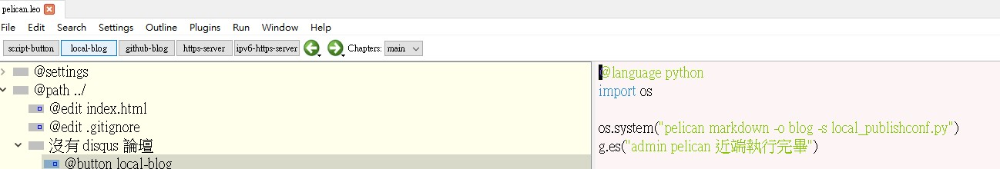
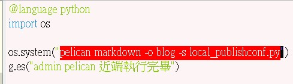
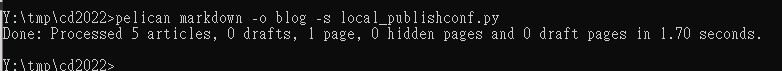
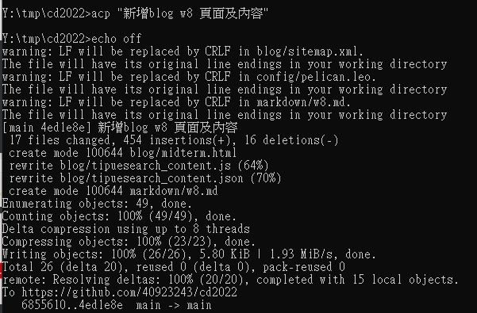

HW05B <<
Previous Next >> W7_Guide
W6 _Guide
編輯Blog 頁面
步驟1: 在黑窗輸入"leo"

步驟2:leo程式啟動後會跳出這個視窗
旁邊這個直接關掉就好
步驟3:利用"open outline"來開啟編輯檔

步驟4:打開"config"裡面的"pelican.leo"

步驟5:利用leo editor來編輯內容

步驟6:編輯完成存檔後，在local-blog按一下右鍵，進去goto script

步驟7:在下面這個頁面按一下"local-blog"，等待黑窗自己關閉後，把選取的字串貼到黑窗，


步驟8:出現[Done: Processed 5 articles, 0 drafts, 1 page, 0 hidden pages and 0 draft pages in 1.26 seconds.]後，在黑窗中接著打[acp"自定義"]


步驟9:push成功之後到個人倉儲上面確認是否有接收到成功訊息，有的話就可以直接到blog上面查看
HW05B <<
Previous Next >> W7_Guide